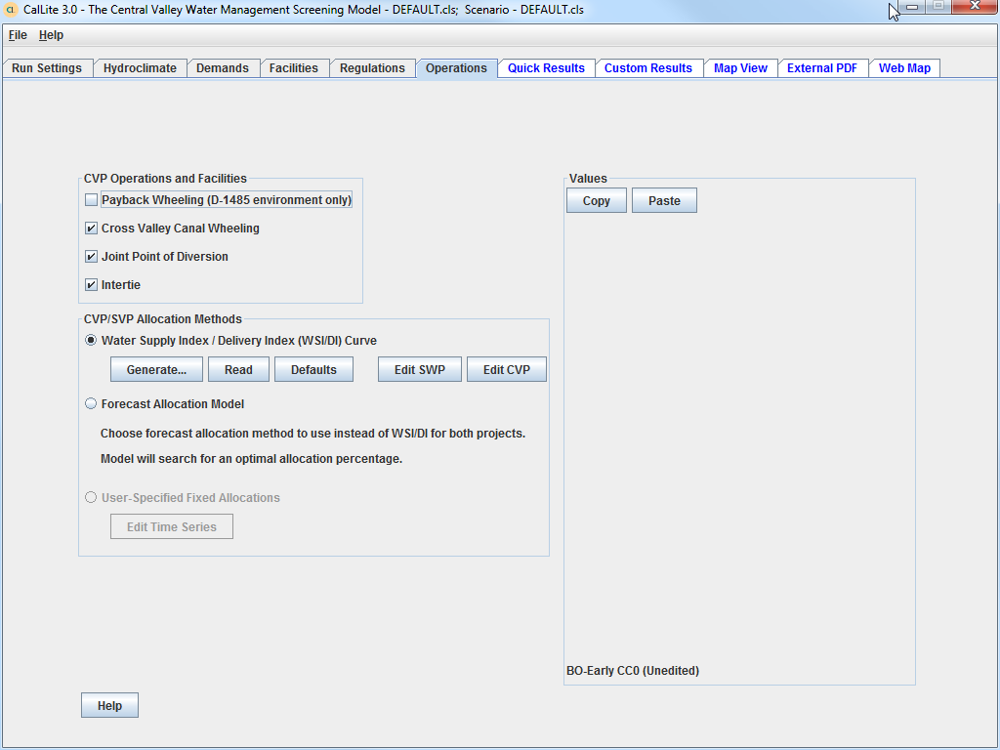

The Quick Results dashboard is where graphs and tables can be generated for numerous CalLite outputs, for one scenario or comparing different scenarios. The different sections on this tab are as follows:
-Scenarios. Here the user can add or delete scenarios from a list of scenarios whose results will be displayed, and select the type of results to show (either for a single scenario (Base option), a comparison of scenarios, or the difference between scenarios). The radio button next to each scenario name can be used to select which scenario to delet, and for difference plots it also controls which scenario the other scenarios are compared to when computing the difference values.
-Display. Has a series of display options, which are:
-Starting and ending month and year to display.
-Whether to show flow data in cfs or taf. Plots of variables other than flow have fixed units (taf for storages, umhos/cm for salinity).
-Whether to show a monthly time series or exceedance plot. Exceedance plots can be shown for individual months, all monthly values, or annual totals. The annual total exceedance plots are only shown for flow variables and the units are always taf.
-Whether to show a table of monthly values. For flow variables this table will also show an annual total which is always in taf.
-Whether to show a summary table. The summary table can show five different statistics (average, maximum, minimum, standard deviation, and median) computed from monthly and annual values, summarized by four different water year types and for the three driest periods in 1922-2003. When summarizing data by water year type, the Sacramento Valley 40-30-30 Index, Feather Index, and SJR (San Joaquin Valley 60-20-20) Index use February as the first month of the water year, and the Shasta Index uses March.
-Report List. This section can be used to create reports which include different selections of multiple graphs and tables. Clicking the Add to List button will add a report to the list that includes all the variables whose checkboxes are active with all the options selected in the Scenario and Display areas. Reports on the list can then be displayed (singly or all at once) and saved for later use. Saved lists can be reloaded using the Load List button.
-Output selection. Right-clicking any of the variable names in this section will display graphs and tables for that variable, and any variables with activated checkboxes can be added to a report list (see above). The Storage and Flows tab allows the user to choose from a variety of standard output variables for flow, storage, and salinity. The Shortages/Flow Objectives tab allows the user to display shortages in accretion/depletion (AD) terms in the North of Delta area; and compare Delta outflow and Sacramento and San Joaquin River flows to the SWRCB Delta Flow Criteria. The Water Management Actions tab is currently not active.
When graphs are displayed it is possible to zoom in by clicking and dragging the cursor to the lower right to create a box. Once zoomed in you can pan by holding down the left button and the Control key, and then moving the mouse. Right clicking in the graph area will bring up a menu that allows you to edit properties of the graph; copy, save, and print the graph; zoom in, zoom out, and reset the plot to its original zoom; and copy the data used to create the graph into the clipboard, from where it can pasted into another application. Certain graphs also display secondary time series (described in the legend) in addition to the primary time series.
